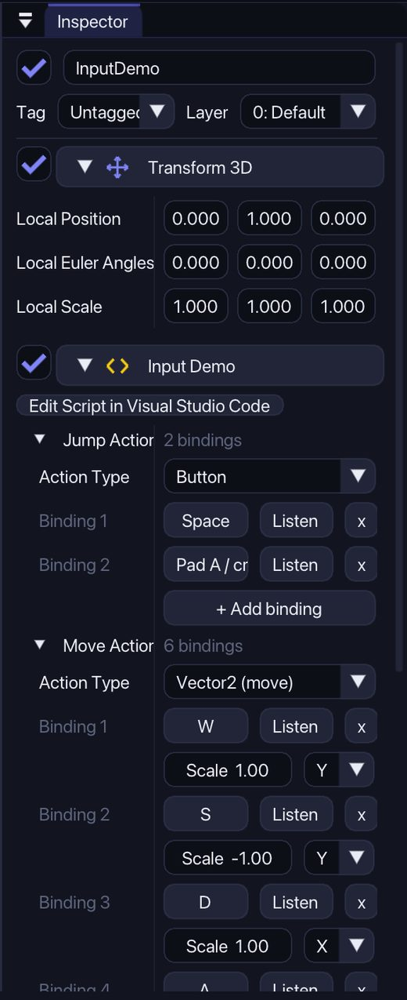
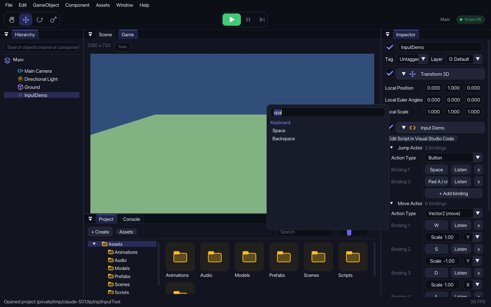
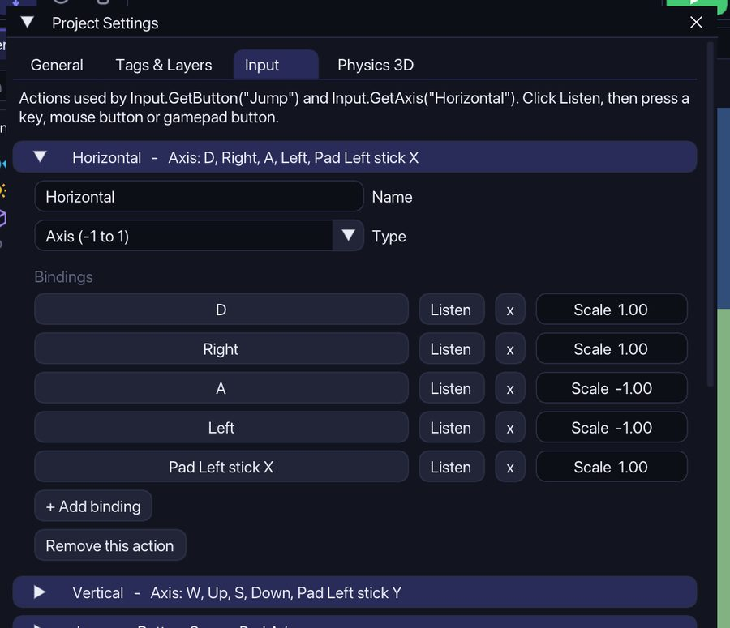

Input Actions
An Input Action is a name like "Jump" together with the keys, mouse buttons and gamepad buttons that trigger it. You set them in the Inspector, so you do not have to write key names in code.
1Add an InputAction field
In any script add a field of the type InputAction (not Action, which is a different thing in C#):
using Strata;
public class Jumper : MonoBehaviour
{
public InputAction jumpAction;
public override void Update()
{
if (jumpAction.WasPressedThisFrame())
Debug.Log("Jump!");
}
}Add the script to an object. The Inspector shows Jump Action. You do not need to create it in code, Strata does that for you.
2Add a binding
Click + Add binding. A new Binding row appears and waits for you: press a key on your keyboard (or a mouse or gamepad button) and it is set.

3Search for an input
Click the name of a binding (for example Space) to search the list. Type space, mouse or pad a and click the one you want. Press Listen and then press the key you want if you prefer that. Esc cancels listening.

4Buttons, axes and movement
The Action Type decides what you read from the action:
- Button:
IsPressed(),WasPressedThisFrame(),WasReleasedThisFrame(). - Axis:
ReadValue()gives a number from -1 to 1. Give the negative key (for example A) aScaleof -1. - Vector2:
ReadVector2()gives X and Y at once. For each binding choose X or Y, for example W adds to Y and D adds to X.
public InputAction moveAction; // Action Type: Vector2 (add "using System.Numerics;" at the top)
public override void Update()
{
Vector2 move = moveAction.ReadVector2();
Transform3D.Translate(new Vector3(move.X, 0, -move.Y) * 4f * Time.DeltaTime);
}You can also react to an action with events: jumpAction.Performed += () => Debug.Log("Jump");. The Canceled event runs when the button is released.
5The project's own actions
Open Window › Project Settings and choose the Input tab. These are the actions used by Input.GetButton("Jump"), Input.GetAxis("Horizontal") and the Character Controller. Change a binding here and everything that uses it changes too. That is how you let your game use other keys, and you can add your own actions with + Add action.

In code you can use these actions by name, Input.GetAction("Jump"), which gives you the same InputAction object.